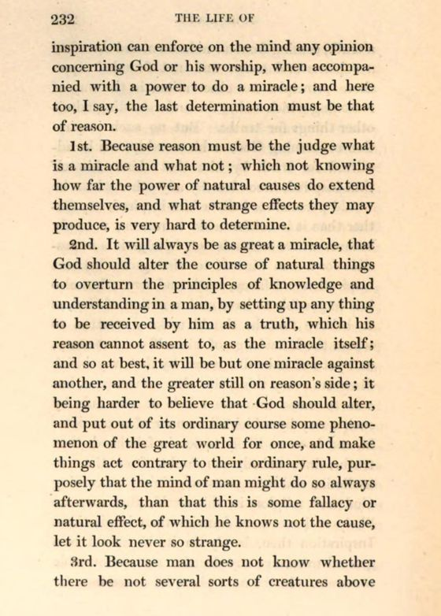

“One miracle against another, and the greater still on reason’s side” (pp. 231–232)
English: London 1830, pp. 231–232, scan. Highlighted: Lecky’s quotation.

… But no such inspiration concerning God, or his worship, can be admitted for truth by him that thinks himself thus inspired, much less by any other whom he would persuade to believe him inspired, any farther than it is conformable to reason; not only because where reason is not, I judge it is impossible for a man himself to distinguish betwixt inspiration and fancy, truth and error; but also it is impossible to have such a notion of God, as to believe that he should make a creature to whom the knowledge of himself was necessary, and yet not to be discovered by that way which discovers every thing else that concerns us, but was to come into the minds of men only by such a way by which all manner of errors come in … since nobody can doubt, from the contradiction and strangeness of opinions concerning God and religion in this world, that men are likely to have more frenzies than inspirations. Inspiration then, barely in itself, cannot be a ground to receive any doctrine not conformable to reason. In the next place, let us see how far inspiration can enforce on the mind any opinion concerning God or his worship, when accompanied with a power to do a miracle; and here too, I say, the last determination must be that of reason.
1st. Because reason must be the judge what is a miracle and what not; which not knowing how far the power of natural causes do extend themselves, and what strange effects they may produce, is very hard to determine.
2nd. It will always be as great a miracle, that God should alter the course of natural things to overturn the principles of knowledge and understanding in a man, by setting up any thing to be received by him as a truth, which his reason cannot assent to, as the miracle itself; and so at best, it will be but one miracle against another, and the greater still on reason’s side; it being harder to believe that God should alter, and put out of its ordinary course some phenomenon of the great world for once, and make things act contrary to their ordinary rule, purposely that the mind of man might do so always afterwards, than that this is some fallacy or natural effect, of which he knows not the cause, let it look never so strange.
[King’s footnote, p. 230, OCR:] “These remarks anticipate the argument in Archbishop Tillotson’s celebrated discourse against Transubstantiation …”
Backlinks
Every place in Rationalism in Europe that links to this page (generated automatically when the site is built).
- Chapter II: note 12